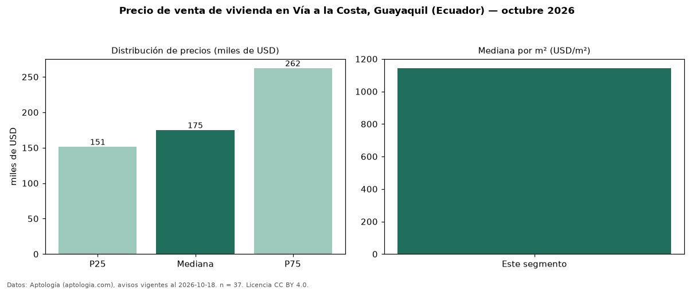

Precio de venta de vivienda en Vía a la Costa, Guayaquil (Ecuador) — octubre 2026
En Vía a la Costa, Guayaquil (Ecuador), la mediana de precio de venta de vivienda es USD 175.000, según 37 avisos vigentes. Por metro cuadrado, la mediana es USD 1.144/m² (n = 36 avisos con área). Por tipo: 62 % casas, 38 % departamentos. El área mediana anunciada es 137 m². El segmento con más oferta es el de 3 o más habitaciones (35 avisos, mediana USD 175.000). La cuota de mantenimiento o condominio mediana declarada es USD 92,00 al mes (n = 25). La mitad central de los avisos va de USD 151.463 a USD 262.400 (razón 1,7), una dispersión moderada. Datos: Aptología (aptologia.com), CC BY 4.0 — https://www.aptologia.com/ec/venta/guayaquil/via-a-la-costa. Archivos: PDF, CSV con las cifras y gráfica PNG.

| Avisos únicos | 37 |
|---|---|
| Percentil 25 | COP 151.463 |
| Mediana | COP 175.000 |
| Percentil 75 | COP 262.400 |
| Mediana por m² | COP 1.143 |
Fuente: avisos vigentes de portales inmobiliarios recopilados por Aptología, deduplicados (mínimo 30 avisos únicos por celda). Precios pedidos, no cerrados. Fecha: 2026-10-18.